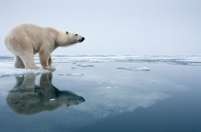
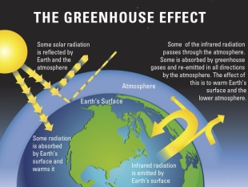
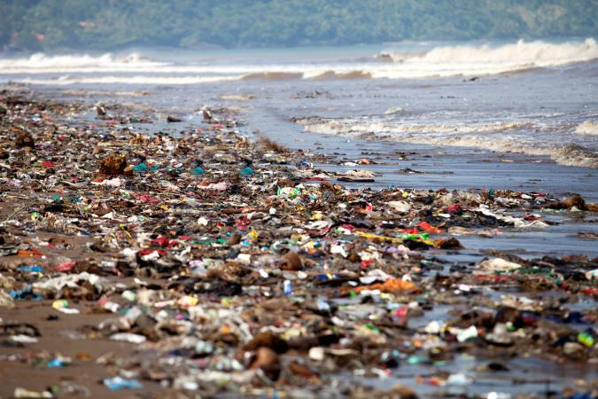
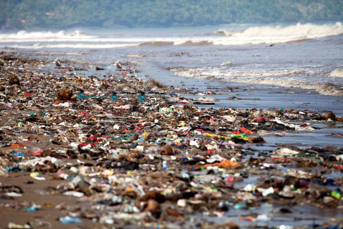

EDUCATE | WHAT IS HAPPENING TO OUR PLANET ?
  


Planet Earth is in crisis. There is something called “planetary boundaries” and unfortunately, Earth's planetary boundaries are being exceeded.
Once exceeded, this can potentially lead to Earth’s collapse. With nearly 8 thousand people, Earth’s supply is limited due to environmental abuse.
It is our mission, to protect this planet and prevent it’s collapse.
Greenhouse gases affect the Earth’s climate and us humans have more than contributed.
The amount of gases being released into the atmosphere have increased by more than 50% since the 1970’s.
The gas gets trapped in the atmosphere, which means the earth gets hotter every year. As this continues, the temperature will rise, completely changing the weather around the world.
A few side effects include; hotter seasons, change in precipitation patterns, more droughts and heat waves and sea level will rise and the ocean will get warm.
As the ocean heats up, oxygen levels will also drop.
With climate change comes change and adaptation. Animal’s are adapting to the new norm of their environment. Some of these changes have threatened the lives of many species.
A writer at WWF says, “The fate of many species in a rapidly warming world will likely depend on their ability to migrate away.